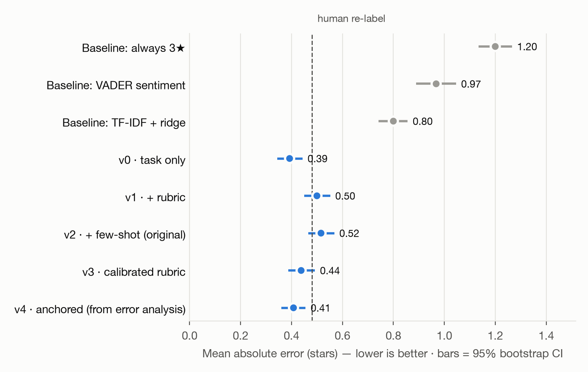
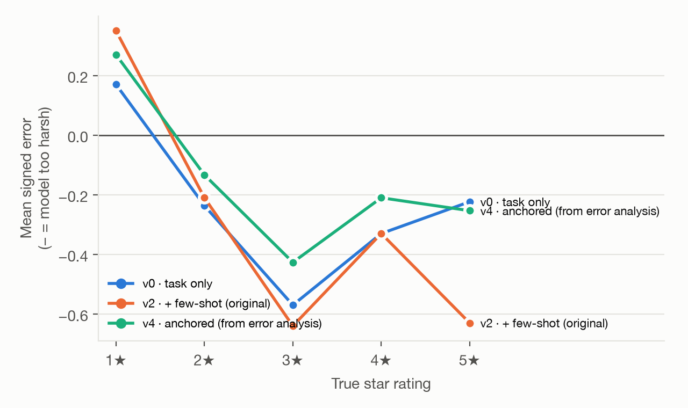
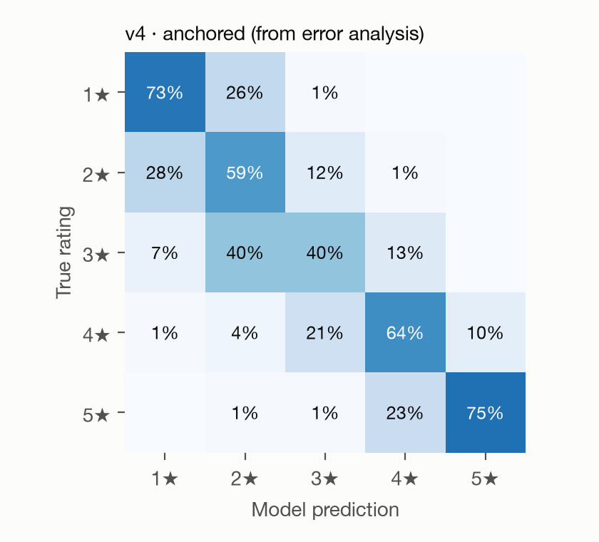
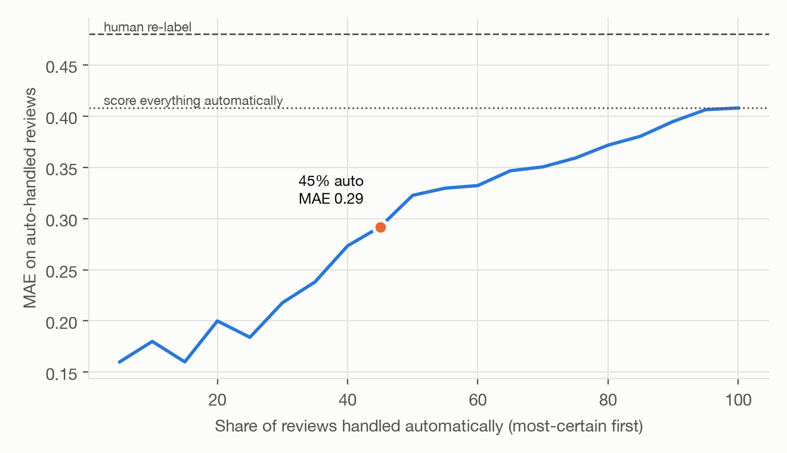

AI · Evaluation
LLM Review Scorer
An evaluation of whether an LLM can recover a 1–5 star rating from review text alone — and whether that is good enough to put in front of users.
Code, prompts, every cached model response and the figures below: github.com/YifengWang289/prompt-engineering-amazon-review-scorer
- LLM evaluation
- Prompt engineering
- Error analysis
- Experiment design
- Python (pandas, scikit-learn)
- Cost modeling
The problem
Most customer feedback arrives without a number. Support tickets, forum posts, social comments and video reviews all carry sentiment, but nothing a dashboard can average. A model that turns text into a 1–5 score would make that feedback comparable — if the scores can be trusted.
An earlier version of this project showed the idea works: 50 reviews, a hand-written rubric with five annotated examples, mean absolute error of 0.53 stars. What it could not answer was the question that decides whether anything ships:
Is 0.53 good? Compared to what? Wrong in which direction? At what cost?
I rebuilt the project around those questions.
Defining "good" before measuring anything
Stars are ordinal, so being off by two is worse than being off by one. That rules out plain accuracy and makes mean absolute error the primary metric, reported alongside exact-match rate, the share within one star, and signed bias — the metric that says whether the model is systematically harsher or softer than real reviewers.
Three things had to exist before any number meant anything.
A test set that can't be gamed. 500 held-out Amazon electronics reviews, 100 per star, sampled from a public 2023 dataset. A separate 150-review dev set for iteration and 2,000 training reviews for the non-LLM baselines. No review and no product appears in more than one split — without that, a model can recognize a product instead of reading the review.
Baselines. Always predict 3★. VADER, a rule-based sentiment scorer. TF-IDF plus ridge regression trained on the 2,000 labeled reviews. If an LLM can't beat a bag of words, it isn't earning its cost.
A human ceiling. I re-labeled 50 test reviews blind — no model output, no true stars — and scored myself the same way. This turned out to be the most important number in the project.
What the eval found
Five prompt versions, each adding one thing, all scored on the same 500 reviews.

| Method | MAE [95% CI] | Exact | ±1 star | Bias | $/1k reviews |
|---|---|---|---|---|---|
| Always predict 3★ | 1.20 [1.13–1.27] | 20% | 60% | +0.00 | — |
| VADER sentiment | 0.97 [0.89–1.05] | 34% | 77% | −0.08 | — |
| TF-IDF + ridge | 0.80 [0.74–0.86] | 33% | 87% | −0.03 | — |
| v0 · one-line prompt | 0.39 [0.34–0.44] | 65% | 96% | −0.24 | $0.048 |
| v1 · + sentiment rubric | 0.50 [0.45–0.55] | 55% | 95% | −0.28 | $0.180 |
| v2 · + five annotated examples | 0.52 [0.47–0.57] | 52% | 96% | −0.29 | $0.517 |
| v3 · satisfaction rubric | 0.44 [0.39–0.49] | 61% | 96% | −0.19 | $0.189 |
| v4 · anchored, from error analysis | 0.41 [0.36–0.46] | 63% | 97% | −0.15 | $0.157 |
The elaborate prompt lost to a one-line prompt. v2 is the carefully built artifact — a five-level rubric plus five worked examples with explanations. v0 is one sentence: "Predict the star rating this customer gave." v0 wins by 0.12 MAE, a gap that survives a paired bootstrap on identical reviews (95% CI [−0.17, −0.08]), and costs a tenth as much per review. The long prompt also hit the API's input-token rate limit mid-run — a throughput cost on top of the price.
The rubric was not neutral. It described the scale in terms of emotional intensity — "angry", "enthusiastic", "full of praise" — and the model scored tone instead of satisfaction. Every rubric version is more biased than no rubric at all.
Where it fails
Errors run one direction and sit in the middle of the scale: the model is harsher than the people who wrote the reviews.

3★ reviews are the worst case — predicted correctly 40% of the time, pushed down to 2★ in another 40%.

The failure is legible in the text. A reviewer writes "doesn't move enough air to clear debris, wish I'd gone for the larger size" and gives it 3 stars. The model reads a named defect and scores dissatisfaction. People use the middle of the scale for "fine, with a real caveat"; the model treats any concrete complaint as a complaint.
Fixing the pattern worked, but not by much. v4 is v0 plus three anchor lines written directly from the dev-set errors — a review naming a flaw without anger is usually a 3, not a 2. It cut bias from −0.24 to −0.15 and raised exact matches to 63%, the best of any version. But against the one-line prompt the difference is inside the noise (ΔMAE +0.015, CI [−0.021, +0.052]). Reporting that honestly matters more than claiming the win.
Is it good enough?
| MAE | Exact | ±1 star | |
|---|---|---|---|
| Me, re-labeling 50 reviews blind | 0.48 | 58% | 94% |
| v4 on those same 50 | 0.46 | 60% | 96% |
| v0 on those same 50 | 0.54 | 56% | 92% |
The model matches a careful human. That sounds like a finish line; it is closer to a warning. Star ratings are noisy labels — they record what someone clicked, not what the text says. One test review is titled "Doesn't work with SJ6 Legend", says the product does not work, and carries 5 stars. Nothing recovers that, and chasing it means fitting noise.
So the human ceiling changed what I did next. Further prompt tuning had nowhere to go. The remaining question was no longer accuracy but operating policy.
Shipping shape
The model reports its own confidence with each score. It is not well calibrated — it said low exactly once in 500 reviews — but it does separate signal: the 27% it marks high score at MAE 0.20 and 83% exact, against 0.49 for the rest. Combined with disagreement across repeated runs, that gives a coverage curve rather than a single number.

| Auto-handled | MAE on auto | Exact | Human reviews / 1k | Cost / 1k |
|---|---|---|---|---|
| 15% | 0.16 | 88% | 850 | $85.16 |
| 45% | 0.29 | 73% | 550 | $55.16 |
| 75% | 0.36 | 67% | 250 | $25.16 |
| 100% | 0.41 | 58% | 0 | $0.16 |
(Manual review priced at $0.10 each — a stated assumption, not a measurement.)
Recommendation: ship it for aggregate trends, not for single reviews. Averaged over hundreds of reviews the bias is a constant that calibration removes, and $0.16 per 1,000 reviews makes coverage of previously unmeasurable channels nearly free. On a single review the model is wrong about a third of the time and wrong in a predictable direction — a 3★ experience shown to a seller as 2★ is a complaint, not a feature. If single-review scores are required, automate the most-certain 45% at MAE 0.29 and route the rest to a person.
Before any of this ships: the 500-review set becomes a regression test. Every prompt change and every model upgrade re-runs it, and the numbers above are the bar.
What these numbers can't support
The recommendation rests on a claim the eval does not actually test. "Good enough for aggregate trends" is about averages over a product — how close the mean predicted rating sits to the mean true rating — and that is a different measurement from per-review MAE. A constant bias of −0.15 may cancel out across hundreds of reviews or may not, depending on how the errors correlate with product type. Measuring it directly is the next thing I would do, and until it exists the recommendation is an inference, not a result.
Two narrower limits: the eval covers electronics only, where reviews are unusually technical and specific; and the model's confidence, which the routing curve depends on, is not calibrated enough to carry that weight.
The original notebook's RMSE line took the square root of the mean absolute error, printing 0.728 where the true value is 0.91; the notebook now carries the fix and a note, and its MAE of 0.53 was correct. The rebuilt eval runs on a different model, so it does not reproduce that run bit-for-bit — current models reject the temperature parameter, so run-to-run variation is measured rather than suppressed.
Skills demonstrated
| Skill | Where it shows |
|---|---|
| Experiment design | Dev/test/train splits with no review or product crossing between them; prompts frozen before the test set was touched |
| Statistical honesty | Bootstrap CIs on every metric; paired bootstrap for version comparisons; reporting that my best prompt's win was inside the noise |
| Prompt engineering | Five versions isolating one change each; structured JSON output replacing regex parsing of free text |
| Error analysis | Failure concentrated to 3★ and to one direction; a targeted fix written from the error sheet and re-measured |
| Measurement design | A blind human baseline that reframed the goal from "improve accuracy" to "decide an operating policy" |
| Product judgment | A ship/no-ship recommendation split by use case, with a coverage-vs-cost curve instead of a single accuracy claim |
| Cost modeling | Per-1,000-review cost for every version; the finding that the best prompt was also the cheapest |
The takeaway
A hand-written rubric is an assumption about how a task works. This one said the job was reading emotional intensity, the model did exactly that, and every version carrying the rubric scored worse than one sentence of plain instruction — at ten times the cost.
The assumption was reasonable when it was written and wrong a year later, and nothing about writing a better prompt would have revealed that. Only the eval did. The durable asset from this project is not the prompt, which a model upgrade can make obsolete overnight; it is the 500-review test set that tells me, in an afternoon, whether the upgrade helped.